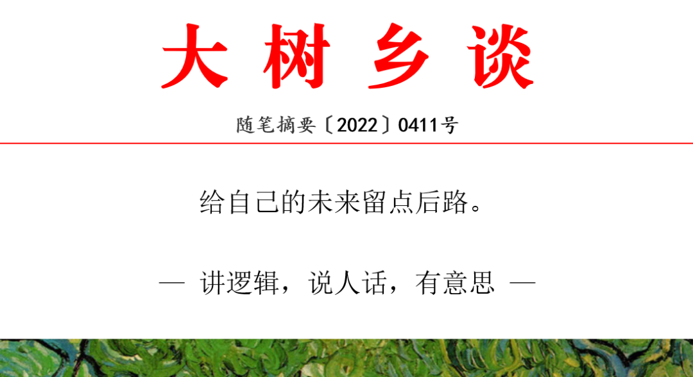

别把叛逆当真知

今天朋友分享了一个报道，说是某公司一名去年刚入职的飞行员，被爆在2015年6月还在上大学的时候，在某社交平台发了一些非常极端的话，比如涉及民族矛盾、辱骂一个民族甚至喊打喊杀等。
原话不发了，也不发截图了，不能鼓动网络暴力。目前他也付出了代价，所属航空公司已经宣布对其停职处理，涉事人员也正在接受相关部门调查。
目前，发表如此极端言论的账号已因违反社区公约，暂时处于禁言状态。
以目前的成长环境，一个孩子倘若家庭教育没有跟上，只想着考学，从高中进入大学，从被严格管束、有确定的努力方向，突然解放了，没人管了，有太多的时间，接触到一些过去从来没接触到的信息，就很容易发生问题。
比如内心仍然秉持高中时代对于信息是正确的潜意识，对过去的生活存在叛逆，看到不一样的就会自以为找到了所谓的“真理”，觉得自己与众不同，就特别容易在一些场合尤其网络平台上搞一些事出来。
这几年，小镇也听了不少案例，比如前几年同样是这个社交平台，有个女孩子也是上大学的时候不知道图啥，发表了大量涉及根本原则性的言论，比如觉得外国的月亮圆、中国太那啥，又或者宣扬分裂等等。
已经过去很多年了，但突然被人翻出来，结果就不多说了。类似的还有一些在网络上发表胳膊肘往外拐声音的，当年还好，但未来国家之间矛盾加深，这种事儿会给自己带来很大麻烦。
至于明星人物的也有，比如某流量明星，前几年在靖国神社合影，结果去年被人翻出来了，职业生涯大受打击。
小镇一直特别建议一定要慎重使用网络，建议再看看旧文《要像潜艇一样藏在水下》，互联网是有记忆的，不要以为有些话说了就说了，更别以为自己说的话没人看。
这个世界，至少有两类人一定会一点点翻遍所有的留言，一种是追求者，另一种是有矛盾的或者说仇人、嫉妒者等等。而追求者也很可能因爱生恨、得不到就毁掉。
就今天这个事而言，这个人15年说的话一定是不对的，他的家庭教育和成长出现了很大问题，三观不正。但小镇认为人是会变的，倘若已经改了，再因为7年前的网上留言在人生刚刚开始的时候遭受重创，这确实可惜。
但是他毕竟是飞行员，一个存在极端思想倾向的人，没有任何航空公司敢于聘用，这也是没办法的事，只希望他能够走出来吧。
就这件事小镇想说几个建议：
1.建议所有人，都好好检查下自己所有的一切网络平台账号，好好看看自己过去都发了什么，如果不是特别重要，可以考虑清空了事，最起码设置最严格的隐私保护。
这个检查也包括曾经在其他地方的留言，一般人不需要这么做，但是有些在大学或者年轻的时候发表一些极端、反动又或者涉及反社会、伤害民族和国民情绪的，一定要谨慎再谨慎，别觉得改用其他账号就没事了。
仇人找蛛丝马迹的时候，可比本人用心多了，在网络上如此不注意，很大可能也暴露了很多个人隐私。如果成为公务员，建议各种社交平台能不用就不用，保留必要的即可。
2.用人单位在聘用的时候，一定要重点考察下网络世界行为，避免因为员工在网络世界乱来给公司带来意想不到的麻烦，体制内单位更要注意。
最重要的是，当价值观和判断力还不成熟的时候，一定要少说情绪性的话，给自己的未来留点后路。
PS：关于新头像投票简单说几句，非常感谢大家提供的很多建议，小镇此前想的确实不够周到，知错就改，昨天的六张图一律不选。但由于同之前切分的需要也比较迫切，因此分两个阶段：
1.短期：更换为“大树乡谈”文字印章作为过渡；
2.长期：根据大家的建议和构思，小镇将找专业人士设计全新的标志，目前已经有三个方案，待完成后再征求大家意见，也期待大家提出自己的设想。
其他文章推荐
■ 2022年中国房地产政策、房价及个人选择
如果喜欢，还请点赞、“在看”和关注吧 欢迎分享，让更多人发现“大树乡谈”